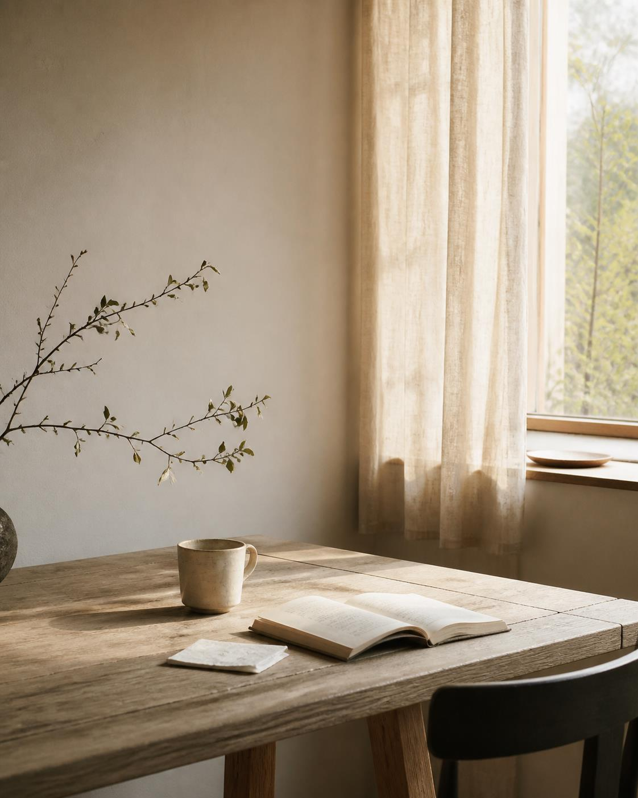
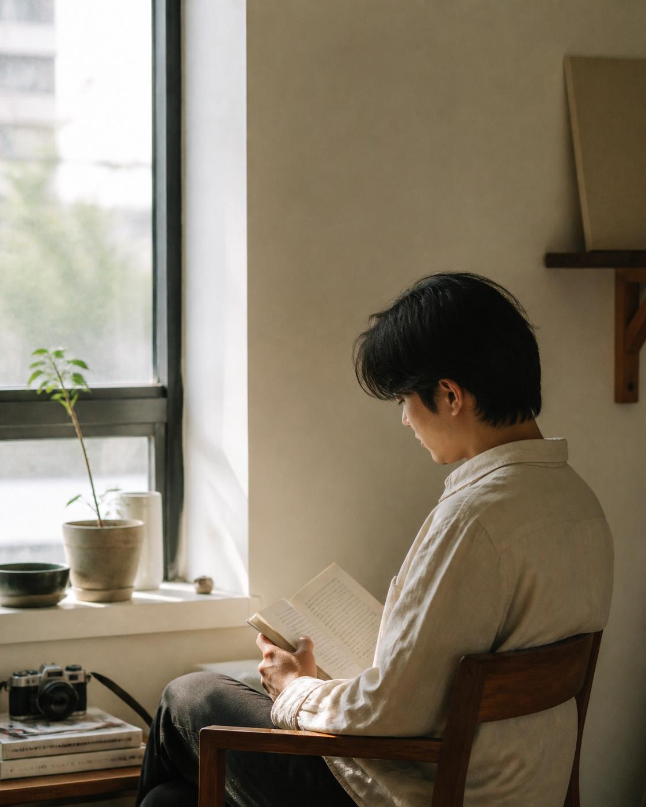

01 / LIFE
life, lately.社群
一些最近的生活片段。不是完整日記，只留下值得回看的畫面。
02 / WORKS
selected works.作品
設計、空間與影像，從生活觀察延伸出去的創作。
03 / THINGS I LOVE
things I love.選物
我喜歡的物件、材質與日常選擇。像生活誌裡的一頁選物。
CONTACT
Let's keep
in touch.
如果你喜歡這裡分享的生活、設計與選物，歡迎找我聊聊。